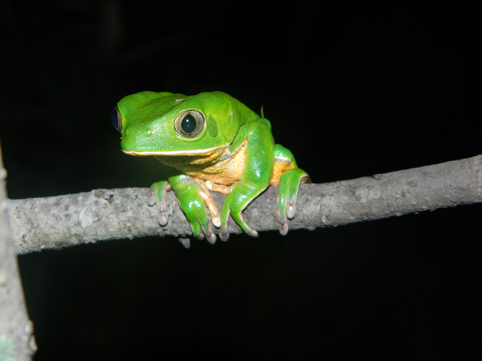

É um animal verde claro com a lateral do corpo, partes internas dos braços e das pernas fortemente coloridas em laranja com manchas irregulares. Uma espécie comum, arborícola, típica de ambientes florestados, mas também é registrada em áreas abertas e de pasto. Ocorre no sudeste e sul do Brasil, além da Argentina e Paraguai.
Seu nome popular é derivado de seu modo de locomoção, pois o andar dessa espécie lembra vagamente o deslocamento de um macaco. Coloca seus ovos nas folhas dos arbustos suspensos sobre a água, onde os girinos cairão após eclodirem. A folha é dobrada com ajuda das pernas traseiras, formando um envelope e os ovos são envolvidos por uma gelatina pegajosa.
